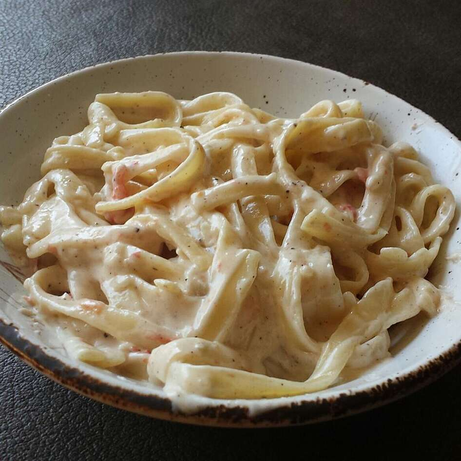

Habanero Pepper Cream Pasta

Description
This is a wonderfully spicy cream pasta with a hint of garlic and
shallots. You also can add sauteed chicken or shrimp. Very easy and quick
sauce to make if you are looking for a spicy entree.
Ingredients
- 1 (8 ounce) package cavatappi pasta
- 1 teaspoon olive oil
- 1 teaspoon butter
- 1 shallot, chopped
- 2 cloves garlic, diced
- 1 dried habanero pepper, chopped
- 2 cups heavy cream
- 1 large tomato, diced
- 2 tablespoons all-purpose flour
- 1 teaspoon black pepper
- 1 cup grated Parmesan cheese
Steps
-
Bring a large pot of lightly salted water to a boil. Add pasta and cook
for 8 to 10 minutes or until al dente; drain.
-
Melt butter with olive oil in a skillet over medium heat. Add shallots,
garlic and habanero pepper, and cook until lightly browned.
-
Pour cream into a saucepan, and bring to a simmer over medium heat. Stir
in the ingredients from the skillet, along with the tomato.
-
Mix in the flour and black pepper, and simmer until thickened, 5 to 8
minutes.
-
Stir in Parmesan cheese, and remove from heat. Allow sauce to cool for a
few minutes before serving over pasta.